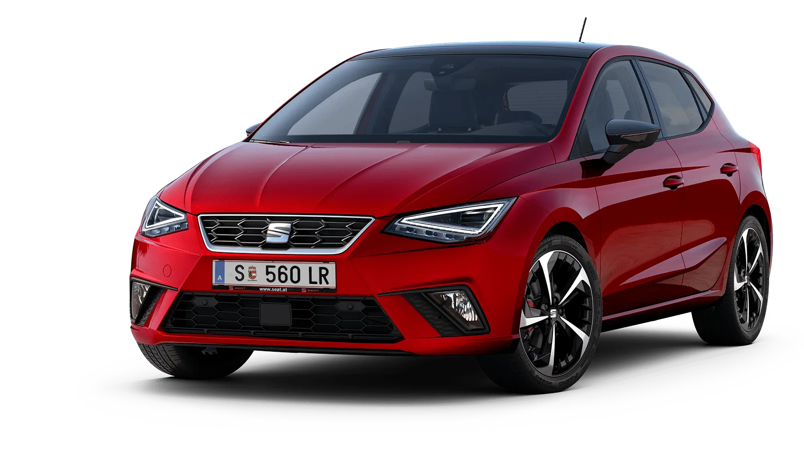

O que é o SEAT Ibiza
A SEAT, fundada em 1950 na Espanha, é uma montadora originalmente criada pelo governo espanhol em parceria com a Fiat. Inicialmente, produzia modelos baseados em designs italianos. Atualmente, como subsidiária do Grupo Volkswagen, destaca-se pela fabricação de carros modernos, acessíveis e tecnológicos, com foco em diferentes estilos de vida. A marca também promove a sustentabilidade, oferecendo veículos híbridos e elétricos.
Características
Preço inicial: 20.000 euros
Produção: Focada em sustentabilidade e eficiência energética.
Motorizações disponíveis:
Gasolina: 1.0 TSI com 95 cv ou 110 cv.
Diesel: 1.6 TDI com 95 cv.
Mild-Hybrid (eTSI): Sistema híbrido leve de 48V com até 110 cv.
Velocidade máxima: 195 km/h.